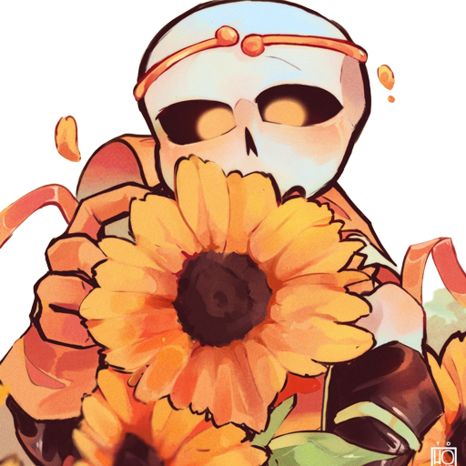

Dream
Dream é o guardião dos sentimentos positivos, a sua personalidade é alegre e sorridente, raramente ficando bravo ou triste.

Curiosidades
- Ele consegue transformar o seu cajado em um arco
- Dream consegue criar flechas de energia positiva,
- Dream consegue tranformar o seu arco em duas espadas que são conectadas por uma corda
- Ele pode criar um escudo de energia positiva, que proteger tanto ele quanto uma outra pessoa que estiver dentro do escudo
- Dream consegue viajar entre as aus, mas só quando a au tem algo sentimento positivo. Ele também consegue levar pessoas junto a ele
- Ele cosegue cura as pessoas, mas isso exije muito de seu poder
- Por ser um guardião dos sentimentos positivos, ele tem uma aura muito positiva, podendo deixar as pessoas em sua volta mais felizes
- Dream é imortal, a sua alma não pode ser destruída nem mesmo danificada por um mortal, só consegue ser destruída por um outro guardião